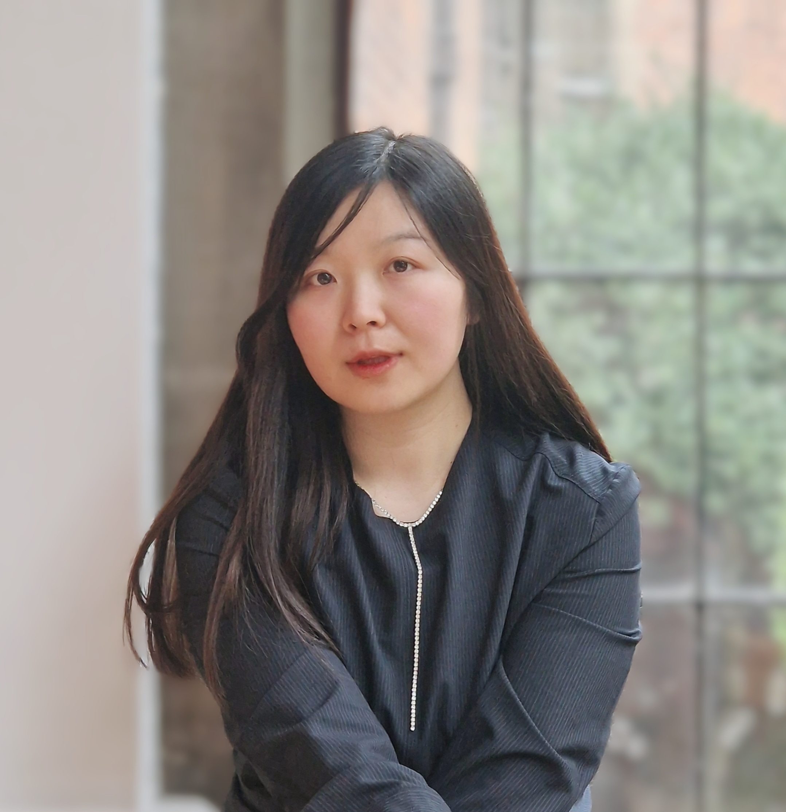

Assistant Professor in Architecture and Urban Studies
School of Architecture and Built Environment
Northumbria University
Before joining Northumbria in 2018, Jiayi held teaching and research roles at the University of Nottingham and worked with international architecture practices like Gensler. Her research, funded by the British Academy, Arts and Humanities Research Council (AHRC), European Cooperation in Science and Technology (COST) and arts institutions, focuses on inclusive, participatory, and technology-driven approaches to urban planning, sustainable development, and equitable, liveable cities.